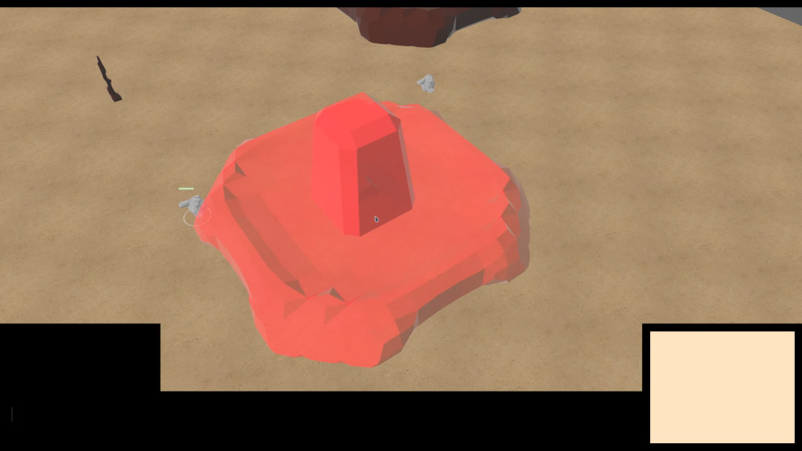
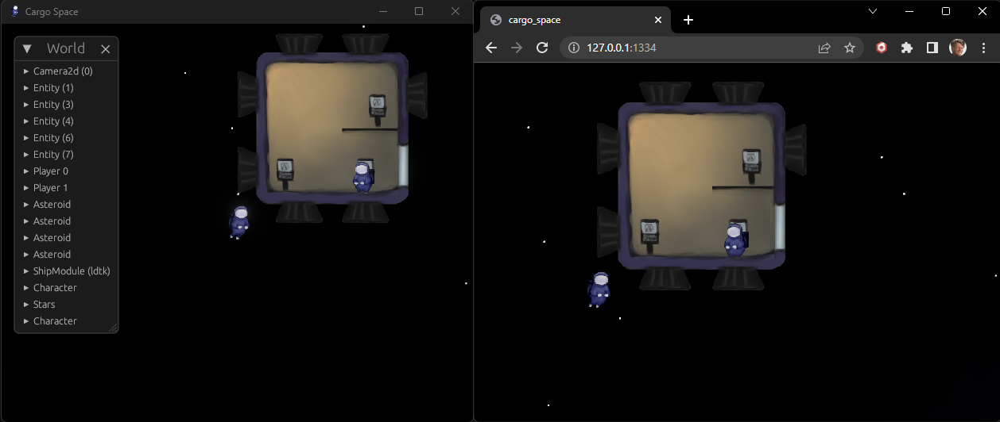
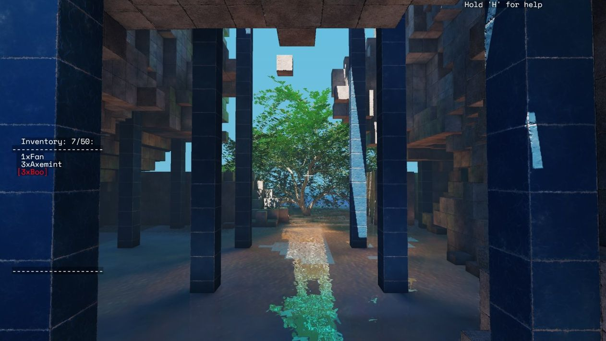
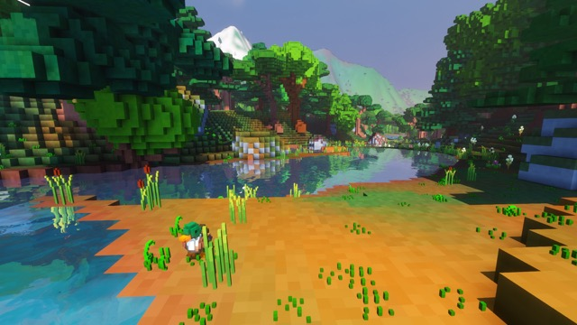
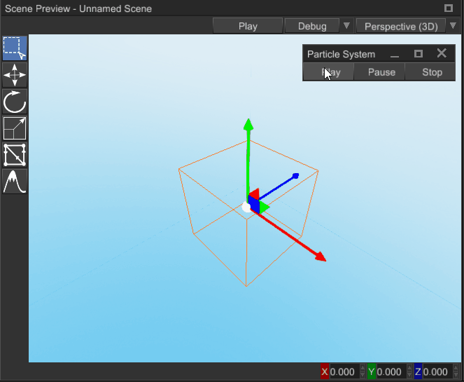
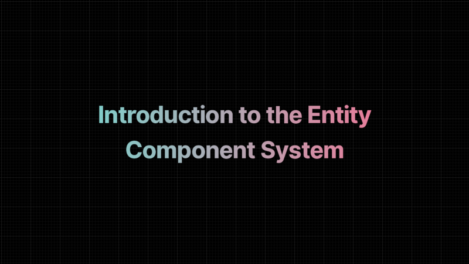
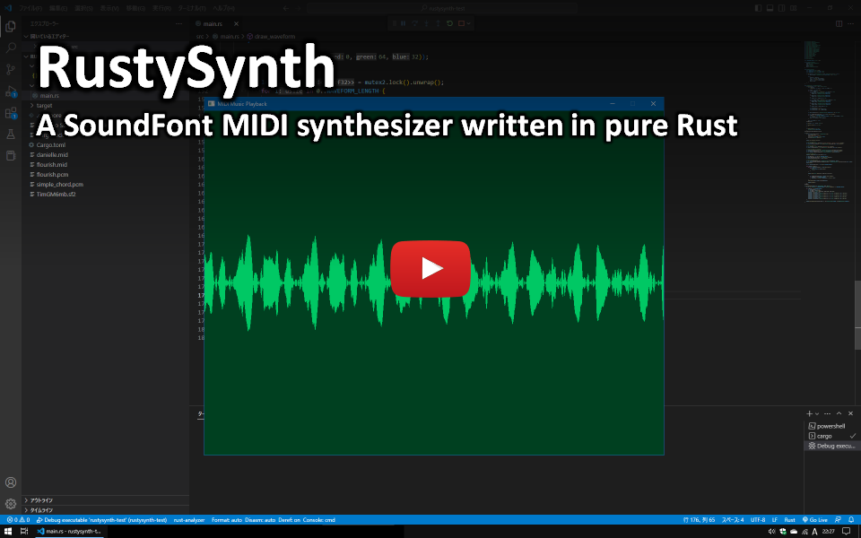
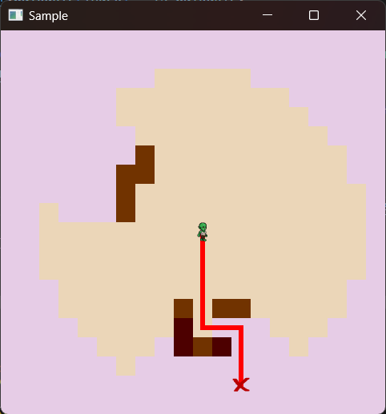

This Month in Rust GameDev #42 - January 2023
Welcome to the 42nd issue of the Rust GameDev Workgroup's monthly newsletter. Rust is a systems language pursuing the trifecta: safety, concurrency, and speed. These goals are well-aligned with game development. We hope to build an inviting ecosystem for anyone wishing to use Rust in their development process! Want to get involved? Join the Rust GameDev working group!
You can follow the newsletter creation process by watching the coordination issues. Want something mentioned in the next newsletter? Send us a pull request. Feel free to send PRs about your own projects!
- Announcements
- Game Updates
- Engine Updates
- Learning Material Updates
- Tooling Updates
- Library Updates
- Other News
- Discussions
- Requests for Contribution
- Jobs
Announcements
Rust Graphics Meetup #3
The Rust Graphics Meetup is an online gathering where Rustaceans share technical details of their work related to graphics and compute, not affiliated with any particular stack. The third edition happened on January 28th! These were the talks:
- Hello, Blade! - Dzmitry Malyshau
- Implementing an Extensible Renderer - Philip Degarmo
- Rend3: High Performance, Cross Platform, GPU Driven Rendering in wgpu and WebGPU - Connor Fitzgerald
Learn more at the gfx meetup repo. The individual videos haven't been uploaded yet, but you can watch the full meetup here. Thanks everyone for tuning in and helping to make this happen!
Rust GameDev Meetup

The 23rd Rust Gamedev Meetup took place in January. You can watch the recording of the meetup here on Youtube. Here was the schedule from the meetup:
- Blade - @kvark
- Digital Extinction- @Indy2222
- Graphite - @GraphiteEditor
The meetups take place on the second Saturday of every month via the Rust Gamedev Discord server and are also streamed on Twitch.
Game Updates
Digital Extinction
 Building Placement in Digital Extinction
Digital Extinction (GitHub, Discord, Reddit) by @Indy2222 is a 3D real-time strategy game made with Bevy.
This month the game had two new first-time contributors, @0HyperCube and @Polostor (Péťa Tománek).
The most notable updates are:
- several multiplayer related screens were added to the menu: sign-in / sign-up, game listing, and game creation,
- building draft is now semi-transparent and colored green or red based on obstacles,
- double clicking on a unit or building leads to the selection of all visible entities of the same type,
- the mouse cursor is now confined to the game window,
- the camera can be moved horizontally with arrow keys,
- pop-up in-game menu was added, it is opened with Escape key,
- work on game head-up display / panel (HUD) was initiated,
- various errors are now briefly displayed as toasts in the UI,
- support of map hashing was added and deterministic map paths are used,
- several small fixes, and code quality improvements.
See gameplay and menu screen recordings on YouTube.
A more detailed update summary is available here.
Cargo Space
 Cross-platform p2p multiplayer in Cargo Space
Cargo Space (Discord) by @johanhelsing is a co-op 2d space game where you build a ship and fly it through space looking for new parts, fighting pirates and the environment.
This month, sprites were added for basic character poses, as well as basic sound effects, making the game come alive and feel more like a proper 2D platformer.
Support for bevy_ggrs' synctest sessions was implemented. This
allows detecting de-syncs by constantly performing rollbacks and comparing world
state checksums). This caught some very rare de-sync bugs.
The game also adopted Matchbox's newly added support for cross-platform p2p. This means sessions between players on web and native are now supported (video).
All of this is discussed in detail in the third devlog entry.
Johan also wrote an article on how sound effects were
implemented in a rollback-aware way, canceling mispredicted sounds, and handling
"late" sounds. It describes a solution that could easily be adopted for any game
made with bevy_ggrs.
Idu
 Screenshot of a tree emerging from a cave in Idu
Idu (Discord) Idu is a strategic sandbox game about growing plants that wish to reclaim nature, developed by Elina Shakhnovich and Johann Tael featuring a bespoke Vulkan-based engine in Rust.
After almost a whole year of relative silence, they have begun releasing new demos in January. The new demo version 8 comes with a new renderer supporting interactive, flowing water. Also, the simulated trees in Idu changed a lot, as they're now able to flower, in addition to dropping leaves. The new demo features a lot of new plant textures, branching logic, and better rhizome and root simulation.
Player accessibility and the gameplay itself is better now as well, due to a completely new menu and a lot of new items, such as porous gabion blocks and ladders.
Read more and download the newest demo from Idu's page on itch.io.
Veloren
 A serene river with new reflections
Veloren is an open world, open-source voxel RPG inspired by Dwarf Fortress and Cube World.
In January, Veloren released version 0.14! This update included trading with pets, musical instrument crafting, the Sea Chapel, and many more changes. You can read all about that update in the release post.
Veloren's Site2 system can now be hot-reloaded. Site2 allows you to describe procedures for how objects like houses, trees, or bridges should be generated. Hot-reloading allows you to change the Site2 code and watch the changes take effect in real-time. The official 2023 Veloren OST was also released, and can be watched on YouTube.
January's full weekly devlogs: "This Week In Veloren...": #204.
Engine Updates
Fyrox

Fyrox (Discord, Twitter) is a game engine that aims to be easy to use and provide a large set of out-of-the-box features. In January it hit version 0.29 and got the following features:
- Animation system rework
- Animation editor
- Animation blending state machine editor rework
- Sprite sheet editor
- Ability to change scene settings
- Improved WebAssembly support
- Customizable graph update pipeline
- Node and property selector widgets
- Message passing for scripts
- Reflection refactoring to support interior mutability
- Deterministic particle systems
- Ability to animate material properties
- Various bug fixes
You can read more about the changes in the feature highlights post.
Learning Material Updates
Introduction to the Entity Component System

@indiedevcasts published a new blog post, exploring object-oriented and data-oriented designs before giving an introduction to the Entity Component System paradigm.
Tooling Updates
Foxtrot

Foxtrot was created by Jan Hohenheim (@janhohenheim) as an all-in-one starting point for 3D projects made in Bevy. While he appreciated that other Bevy templates showed nicely how to wire up systems and setup a game loop, he was missing a showcase for commonly used features that are scattered around various libraries. So he created Foxtrot, where he collected the most basic features he could need for future projects or jams. The latest release features:
- loading a 3D level from GLTF files
- automatically assigning physics colliders
- a custom dialog system
- saving and loading the game
- a force-based third-person character controller
- shaders
- pathfinding
- a flexible camera system with easings supporting various perspectives
- a custom in-game editor window for live tweaks such as spawning new objects.
Graphite

Graphite (website, GitHub, Discord, Twitter) is a free, in-development raster and vector 2D graphics editor based around a Rust-powered node graph compositing engine.
New features from January's sprint 22:
- Picture this: Imported images are now part of the node graph. The new Image Frame node converts bitmap data into a vector rectangle holding the image. This paves the way for other vector data like shapes and text to soon be converted into nodes and composited alongside images.
- Instant iterations: Incremental graph compilation avoids recompiling the whole graph each time an edit is made or a value changes. This makes iteration faster and enables caching of intermediate computations for faster rendering.
And soon, the Alpha Milestone 2 release will launch with new node graph features, a revamped website, and a wider-reaching project announcement. Join the newsletter and stay tuned.
Open Graphite in your browser and start creating! Share your designs with #MadeWithGraphite on Twitter.
Library Updates
big-brain
big-brain (GitHub, Discord) by @zkat is a highly parallel Utility AI library for the Bevy game engine.
big-brain recently tagged v0.16.0, bringing with it a couple of breaking changes and a few goodies.
Probably the biggest change in this release is the removal of the blanket
ActionBuilder and
ScorerBuilder implementations for Clone types.
This is a fairly significant breaking change, but one that is fairly easy to
resolve: simply use the new #[derive(ActionBuilder)] and
#[derive(ScorerBuilder)] macros to derive the necessary implementations for
your Action and Scorer Components and you should be good to go.
Finally, since the recent merging of the bevy scheduler
changes, big-brain users should expect the
next version of big-brain to bring with it some significant breaking changes to
scheduling, so keep an eye out for that and be mindful of building a lot on top
of the current BigBrainStage (which is used by the default
BigBrainPlugin).
Discussions: Mastodon
RustySynth
 Video: an example of realtime MIDI synthesis with RustySynth on rust-sfml
RustySynth is a SoundFont MIDI synthesizer written in pure Rust. The purpose of this library is to provide MIDI music playback functionality for any Rust application without complicated dependencies. The code base is lightweight and can be used with any audio driver that supports streaming audio (e.g. rust-sfml).
Features:
- Tuned mainly for gamedev and has low CPU usage.
- Support for standard MIDI files.
- No dependencies other than the standard library.
- Available under a permissive license (MIT).
tween
tween is a library for manipulating values in stylish and beautiful ways. It
has been almost entirely rewritten for v2.0.0, now featuring a significantly
improved API, fewer generics, and much, much faster performance.
Additionally, it has added support for Looping, Oscillating, and Extrapolating tweens. With all of this, making custom tweens is much easier. An example of making a Bezier tween is included.
scene-graph
scene-graph is a library for creating graph structures similar to the one used
in engines like Unity or Unreal. It is fast, performant, and easy to manipulate.
It's especially useful for user interfaces. Although only in v0.1.0, feedback
would be very appreciated.
torchbearer
 An exemple of torchbearer in action, demonstrating both pathfinding and field of view
torchbearer by @redwarp is a library that provides a set of tools to find your path in a grid-based dungeon. Specifically, it provides a quick implementation of pathfinding and field of view algorithm.
The 0.6.x version rewrites the field of view algorithm to cast vision rays in a Bresenham circle around the point of origin. This change from its original implementation makes it faster as it removes the needs for error correction.
Matchbox

Matchbox is a library for easily establishing unreliable, unordered, peer-to-peer WebRTC data connections using rust WASM. This enables low-latency multiplayer browser games.
Originally, it was written for web assembly, but a native implementation using WebRTC.rs has been available since 0.4. However, a few minor incompatibilities between the two implementations meant connections between native and web were not possible.
In version 0.5, however, Alex Rozgo fixed the last of these issues. And cross-play sessions are now finally fully supported.
In addition, johanhelsing fixed a serious bug that used to cause disconnections on recent versions of Firefox.
The tutorial series on how to make a p2p web game with Bevy, GGRS and Matchbox was also updated to the latest versions of all three libraries.
Discussions: Mastodon
miniquad
 Miniquad/macroquad examples rendered by Metal API
Miniquad/macroquad examples rendered by Metal API
miniquad is a safe and cross-platform rendering library focused on portability and low-end platform support.
This month metal backend PR finally landed on miniquad!
It is not yet ready for any production use, but it is available on crates.io as 0.4.0-alpha.
With this change, miniquad support webgl1, gl2, gles2/gles3, gl3+, metal on web, macOS, iOS, Android, Windows, and Linux.
Other News
- Other game updates:
- Hydrofoil is getting closer to their February release date.
- Tiny Glade now has terrain modification.
- Thetawave now has a functional boss enemy.
- 8bit Duels is just released their fifth devlog.
- Combine And Conquer just released version 0.4.0.
- Your Only Move is Hustle is now available on Steam.
- TheGrimsey write a devblog "Magic Missiles & the Registries".
- Flesh has a new redrawn background in the first area, and has been tested to run on the Steam Deck.
- DGS is a multiplayer game of Go, with spherical fields and VR support.
- Triverse has a set of devlogs out, with the most recent covering scenarios and playability.
- Fish Folk: Punchy has released version 0.3.
- Life Code has a new video explaining how the diet selection tool works.
- Digg is a new game being made with Bevy, and has a devlog that walks through the first two weeks of development.
- Revolver Time is a game made in 1 week with Godot and Rust, and has a video explaining how it was made.
- Canal Mania is a game created for the Historically Accurate Game Jam.
- Other learning material updates:
- Native iOS Touch Events w/ Rust is a tutorial on how to use Rust to create native iOS touch events.
- Bevy Basics video series is a series of videos that covers the basics of Bevy.
- Platformer in Bevy video series is a series of videos that covers how to make a platformer in Bevy.
- Other engine updates:
- alkahest-rs released put about a video about implementing texture batching.
- godot-rust saw large improvements to the Godot 3 bindings.
- petrichor64 is a retro-inspired small 3D fantasy engine.
- Other tooling updates:
- Ten Minute Physics is a reimplementation of Matthias Müller's "Ten Minute Physics" demos in Rust with WASM + WebGL.
- rgis is a geospatial data viewer written in Rust.
- Other tooling updates:
- wgpu v0.15, naga v0.11 were released.
- raster_fonts, a library for deserializing the resulting metadata, was announced.
- nvtt has been updated to use Nvidia Texture Tools 3.
- oxidized_navigation is a nav-mesh generation & pathfinding crate to use with Bevy.
- VPlugin is a Rust framework to develop and use plugins within your project, without worrying about the low-level details.
- egui_glium is looking for a new maintainer.
- direct-storage provides Rust bindings for DirectStorage.
- bones is a work-in-progress, opinionated game framework built on Bevy.
- airsim-client is a Rust client library for interacting with Microsoft Airsim.
- Rapier wrote a year in review for 2022, and took a look ahead to 2023.
- bevy-magic-light-2d is an experimental dynamic 2D global illumination system for Bevy, based on SDF ray-marching and screen space irradiance cache probes.
- notan v0.9 was released.
Discussions
- /r/rust_gamedev:
Requests for Contribution
- 'Are We Game Yet?' wants to know about projects/games/resources that aren't listed yet.
- Graphite is looking for contributors to help build the new node graph and 2D rendering systems.
- winit's "difficulty: easy" issues.
- Backroll-rs, a new networking library.
- Embark's open issues (embark.rs).
- wgpu's "help wanted" issues.
- luminance's "low hanging fruit" issues.
- ggez's "good first issue" issues.
- Veloren's "beginner" issues.
- A/B Street's "good first issue" issues.
- Mun's "good first issue" issues.
- SIMple Mechanic's good first issues.
- Bevy's "good first issue" issues.
Jobs
- Ambient
(Remote)
- Engine Programmer
- Rendering Engineer
- Open Source Community Engineer
- Embark Studios
(Stockholm/Hybrid Remote)
- Various roles
That's all news for today, thanks for reading!
Want something mentioned in the next newsletter? Send us a pull request.
Also, subscribe to @rust_gamedev on Twitter or /r/rust_gamedev subreddit if you want to receive fresh news!
Discuss this post on: /r/rust_gamedev, Twitter, Mastodon, Discord.